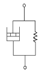
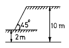
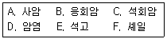
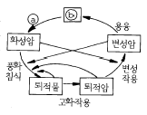
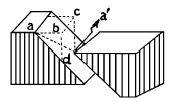

화약취급기능사 (2004-02-01 기출문제)
1과목: 화약 및 발파
1. 다음 화약류를 용도에 의해 분류할 때 전폭약에 해당되는 것은?
- 테트릴
- 다이너마이트
- 무연화약
- TNT
(정답률: 알수없음)

2. 화약류의 혼합성분 중 발열제에 속하는 것은?
- 글리세린
- 디페닐아민
- NaCl
- 알루미늄
(정답률: 알수없음)
3. 다음은 폭약의 겉보기 비중과 감도에 대한 설명이다. 틀린 것은?
- 폭약은 비중이 클수록 폭발속도나 맹도가 크다.
- 겉보기 비중이란 약포의 부피를 화약량으로 나눈값이다.
- 폭약은 비중이 작을수록 기폭하기 쉽다.
- 저비중 폭약은 탄광 및 장공 발파에 사용된다.
(정답률: 알수없음)
4. 화공품 시험에서 납판시험과 관계가 깊은 것은?
- 폭약위력시험
- 뇌관시험
- 함수시험
- 도화선시험
(정답률: 알수없음)
5. 아래와 같은 반응에서 니트로글리세린 1몰(227.1g)이 반응해서 얻어지는 산소평형값은? (단, C3H5N3O9 → 3CO2 + 2.5H2O + 1.5N2 + 0.2502)
- + 0.035
- + 0.0035
- + 1.022
- + 0.102
(정답률: 알수없음)
6. 다음 그림과 같은 역학적 모양은?

- Maxwell 물체
- Bingham 물체
- St.Venant 물체
- Voigt 물체
(정답률: 알수없음)
7. 다음 심빼기 발파법 중 수평갱도에서는 천공이 불편하나 상향굴이나 하향굴의 천공에 매우 유효한 방법은?
- 피라미드 심빼기
- 삼각 심빼기
- 부채살 심빼기
- 번 커트 심빼기
(정답률: 알수없음)
8. 다음 중 제발발파(동시발파)의 효과를 크게하기 위하여 고려하여야 할 사항은?
- 천공직경과 천공길이
- 천공길이와 최소저항선
- 폭약의 종류와 천공길이
- 최소저항선과 천공간격
(정답률: 알수없음)
9. 전기발파시 직렬식 결선법의 장점이 아닌 것은?
- 결선이 용이하고, 불발시 조사하기가 쉽다.
- 모선과 각선의 단락이 잘 일어나지 않는다.
- 각 뇌관의 저항이 조금씩 다르더라도 상관없다.
- 한군데라도 불량한 곳이 있으면 전부 불발된다.
(정답률: 알수없음)
10. 다음 중 경사공 심빼기가 아닌 것은?
- 부채살 심빼기
- V형 심빼기
- 피라미드 심빼기
- 코로만트 심빼기
(정답률: 알수없음)
11. 흙의 전단강도를 감소시키는 요인과 거리가 먼 것은?
- 공극수압의 증가
- 팽창에 의한 균열
- 흙 다짐의 불충분
- 굴착에 의한 흙의 일부제거
(정답률: 알수없음)
12. 전색을 함으로써 발파에 미치는 영향을 가장 올바르게 설명한 것은?
- 외부와의 공기차단으로 폭연이 많이 발생한다.
- 충격파를 증대시켜 폭음을 크게한다.
- 불발을 방지해준다.
- 가스나 탄진에 인화될 위험을 적게한다.
(정답률: 알수없음)
13. 다음 중 화약의 폭발속도를 측정하는 방법과 거리가 먼것은?
- 도트리시법
- 메테강법
- 오실로그래프법
- 크루프식법
(정답률: 알수없음)
14. 다음 폭약 중 폭발속도가 가장 빠른 것은?
- TNT
- 피크르산
- 헥소겐
- 니트로나프탈렌
(정답률: 알수없음)
15. 그림과 같은 단순사면의 경우 심도계수는 얼마인가?

- 0.35
- 1.25
- 2.25
- 5.⑤
(정답률: 알수없음)
16. 테트릴에 대한 설명으로 틀린 것은?
- 엷은 노랑색 결정으로 흡수성이 없다.
- 페놀에 질산을 혼합 작용시켜 만든다.
- 물에 잘 녹지 않는다.
- 피크르산보다 예민하고 위력도 강하다.
(정답률: 알수없음)
17. 다음 중 기폭약이 아닌 것은?
- 아지화납
- 카리트(Carlit)
- 풀민산수은(Ⅱ)
- 디아조디니트로페놀
(정답률: 알수없음)
18. 다음 중 발파장비와 사용목적이 틀린 것은?
- 누설전류측정기 - 발파현장의 누설전류 차단
- 도통시험기 - 발파모선과 보조모선의 단락여부 확인
- 발파능력측정기 - 발파기의 용량부족여부 확인
- 발파저항측정기 - 전기발파 회로의 저항측정
(정답률: 알수없음)
19. 폭약계수(e)에 관한 설명이다. 다음 중 틀린 것은?
- 기준폭약과 다른 폭약과의 발파 효력을 비교하는 계수이다.
- 강력한 폭약일수록 폭약계수 값은 작게 된다.
- 기준폭약으로 니트로글리세린 70%인 스트렝스 다이너마이트를 사용한다.
- 발파계수(C)를 구성하는 요소 중 하나이다.
(정답률: 알수없음)
20. RQD 값에 대한 설명으로 잘못된 것은?
- 강도가 클수록 커진다.
- 풍화가 적을수록 커진다.
- 균질보다는 이방성일수록 커진다.
- 절리와 같은 역학적 결함이 적으면 커진다.
(정답률: 알수없음)
2과목: 화약류 안전관리 관계 법규
21. 불발, 잔류화약의 주된 원인을 나열한 것 중 서로의 관계가 잘못된 것은?
- 발파법 : 직렬, 직병렬 결선에 의존
- 도화선 : 심약의 일부 절단 및 흡습
- 폭 약 : 변질, 흡습, 동결, 고화, 노화
- 뇌 관 : 점폭약의 부족 또는 흡습
(정답률: 알수없음)
22. 2m3를 채석하는데 500g의 폭약이 소요되었다면 3m3의 채석을 할 경우 폭약소비량은 얼마인가?
- 550g
- 650g
- 750g
- 850g
(정답률: 알수없음)
23. 어떤 흙의 자연 함수비가 그 흙의 액성한계비보다 높다면 그 흙의 상태는?
- 소성상태
- 액체상태
- 반고체상태
- 고체상태
(정답률: 알수없음)
24. ANFO폭약 폭발시 후가스가 가장 양호한 질산암모늄과 경유의 중량 혼합비율은? (단, 질산암모늄:경유, 단위는 %)
- 50:50
- 60:40
- 75:25
- 94:6
(정답률: 알수없음)
25. 발파모선을 배선할 때에는 다음 사항에 주의하여야 한다. 틀린 것은?
- 발파모선은 항상 두선이 합선되지 않도록 떼어 놓는다.
- 모선이 상할 염려가 있는 곳은 보조모선을 사용한다.
- 결선부는 다른 선과 접촉하지 않도록 주의한다.
- 물기가 있는 곳에서는 결선부를 방수테이프 등으로 감아준다.
(정답률: 알수없음)
26. 착암기로 천공하여 불발공을 처리하고자 할 때 불발공과의 천공간격은?
- 30cm
- 50cm
- 60cm
- 20cm
(정답률: 알수없음)
27. 저장소의 지반의 두께 기준중 저장하는 폭약이 25톤이하 일 경우 지반의 두께는 최소 얼마 이상이어야 하는가?
- 29m
- 28m
- 26m
- 24m
(정답률: 알수없음)
28. 화약류관리보안책임자가 화약류취급 전반에 관한 사항을 주관하면서 규정을 위반하여 대통령령이 정하는 안전상의 감독업무를 게을리 하였다면 어떤 처벌을 받는가?
- 3년 이하의 징역
- 5년 이하의 징역
- 700만원 이하의 벌금형
- 300만원 이하의 과태료
(정답률: 알수없음)
29. 전기뇌관의 도통시험시 시험전류를 측정하여 몇 [A]를 초과하지 말아야 하는가?
- 0.1
- 0.5
- 0.01
- 0.⑤
(정답률: 알수없음)
30. 과태료 처분에 불복(不服)이 있는 사람은 몇 일 이내에 관할관청에 이의(異議)를 제기할 수 있는가? (단, 그 처분이 있음을 안 날부터)
- 15일이내
- 20일이내
- 30일이내
- 7일이내
(정답률: 알수없음)
31. 표지를 하지 아니하고 운반할 수 있는 화약류의 수량 중 맞는 것은?
- 화약 20kg 이하
- 폭약 10kg 이하
- 공업용뇌관 1000개 이하
- 도폭선 100m 이하
(정답률: 알수없음)
32. 화약류 운반시에 뇌홍은 수분 또는 알코올분이 몇 % 정도 머금은 상태로 운반하여야 하는가?
- 20%
- 23%
- 25%
- 15%
(정답률: 알수없음)
33. 1급 저장소에 폭약 20톤을 저장하고자 한다. 주변에 촌락의 주택이 있을 경우 보안거리는 얼마 이상 두어야 하는 가?
- 140m
- 220m
- 380m
- 440m
(정답률: 알수없음)
34. 화약류관리보안책임자 1인으로 몇 개의 화약류 저장소를 관리할 수 있는가?
- 1개동
- 2개동
- 3개동
- 4개동
(정답률: 알수없음)
35. 화약류 저장소의 위치, 구조 및 설비를 임의로 변경하였을 때 벌칙은?
- 100만원 이하의 과태료
- 3년 이하의 징역 또는 300만원 이하의 벌금형
- 3년 이하의 징역 또는 500만원 이하의 벌금형
- 3년 이하의 징역 또는 700만원 이하의 벌금형
(정답률: 알수없음)
36. 현정질, 비현정질 조직에 있어서 상대적으로 유난히 큰 광물 알갱이들이 반점 모양으로 들어 있는 경우 이러한 조직은?
- 반상조직
- 구상조직
- 미정질조직
- 유리질조직
(정답률: 알수없음)
37. 다음 중 화학적 풍화에 가장 저항력이 큰 것은?
- 감람석
- 장석
- 휘석
- 석영
(정답률: 알수없음)
38. 석영조면암에 유상구조가 보이면 이를 무엇이라 하는가?
- 석영반암
- 반화강암
- 유문암
- 섬장암
(정답률: 알수없음)
39. 화성암의 주성분 광물 중 고용체가 아닌 것으로 화학성분이 SiO2인 것은?
- 석영
- 정장석
- 흑운모
- 각섬석
(정답률: 알수없음)
40. 화강암과 같은 심성암체를 형성하고 있으며 가장 규모가 크게 산출되는 화성암체는 무엇인가?
- 병반
- 저반
- 암주
- 용암류
(정답률: 알수없음)
3과목: 암석 및 지질
41. 다음 중 CaO 성분이 가장 많은 화성암은?
- 유문암
- 안산암
- 현무암
- 감람암
(정답률: 알수없음)
42. 우리나라 전지역의 반이상을 차지하고 있는 암석들은?
- 역암, 응회암
- 감람암, 현무암
- 사암, 이암
- 화강암, 화강편마암
(정답률: 알수없음)
43. 마그마의 정출과 분화작용 중 높은 온도에서 낮은 온도로 정출된 암석순서가 바르게 된 것은?
- 반려암 - 화강암 - 섬록암
- 화강암 - 섬록암 - 반려암
- 섬록암 - 반려암 - 화강암
- 반려암 - 섬록암 - 화강암
(정답률: 알수없음)
44. 다음의 화성암 중 염기성암으로만 이루어진 것은?
- 현무암, 휘록암, 반려암
- 안산암, 안산반암, 섬록암
- 유문암, 석영반암, 화강암
- 석영반암, 섬록암, 반려암
(정답률: 알수없음)
45. 묽은 염산에 넣으면 거품을 내고 못으로 그으면 부드럽게 긁히는 광물의 암석명은?
- 화강암
- 대리암
- 반려암
- 섬록암
(정답률: 알수없음)
46. 다음 중 변성작용에 의하여 생성되는 특징적인 변성광물이 아닌 것은?
- 녹니석
- 백운모
- 석류석
- 사장석
(정답률: 알수없음)
47. 파쇄작용이 주원인이 되어 이루어진 변성암은?
- 규암
- 편암
- 대리암
- 안구상 편마암
(정답률: 알수없음)
48. 습곡을 이룬 지층의 단면에서 구부러진 모양의 ①정상부 명칭과 ②가장 낮은 부분의 명칭이 바르게 짝지어진 것은? (순서대로 ①, ②)
- 배사, 향사
- 향사, 배사
- 윙, 림(limb)
- 림(limb), 윙
(정답률: 알수없음)
49. 쇄설성 퇴적암을 다음의 보기에서 골라 옳게 짝지은 것은?

- B 와 E
- C 와 D
- B 와 C
- A 와 F
(정답률: 알수없음)
50. 변성되기 전의 원암으로 계산할 때 지구표면 근처에는 표토를 제외하고 퇴적암과 화성암의 양적비율이 어떻게 되어 있는가?
- 퇴적암 75% : 화성암 25%
- 화성암 75% : 퇴적암 25%
- 화성암 95% : 퇴적암 5%
- 퇴적암 95% : 화성암 5%
(정답률: 알수없음)
51. 다음 중 퇴적암의 특징과 거리가 먼 것은?
- 층리
- 화석
- 건열
- 절리
(정답률: 알수없음)
52. 변성암에서 구성 광물들이 세립이고 균질하게 배열되어 있는 엽리의 평행구조를 무엇이라 하는가?
- 층리
- 절리
- 편리
- 편마구조
(정답률: 알수없음)
53. 화성암의 육안적 분류에서 가장 색갈(깔)이 진한 것은?
- 유문암
- 섬록암
- 조면암
- 감람암
(정답률: 알수없음)
54. 단층면의 주향이 지층의 주향과 직교하는 단층은?
- 경사단층
- 정단층
- 역단층
- 수직단층
(정답률: 알수없음)
55. 습곡의 축면이 수직이고 축이 수평이며 양쪽 윙의 기울기가 대칭인 습곡은?
- 경사습곡
- 완사습곡
- 등사습곡
- 정습곡
(정답률: 알수없음)
56. 다음 그림은 암석의 윤회과정을 그림으로 나타낸 것이다. 낏와 낑를 바르게 나타낸 것은? (순서대로 ⓐ, ⓑ)

- 화산작용, 용암
- 동력변성작용, 반심성암
- 운반작용, 심성암
- 결정작용, 마그마
(정답률: 알수없음)
57. 다음 그림에서 단층의 수평 이동 거리를 나타낸 것은?

- aa′
- bd
- bc
- ad
(정답률: 알수없음)
58. 다음 중 속성작용의 범주에 들어가지 않는 것은?
- 다져짐작용
- 재결정작용
- 교결작용
- 분별정출작용
(정답률: 알수없음)
59. 다음 중 지각변동대에서 볼 수 있는 지질구조가 아닌것은?
- 호른(horn)
- 단층(fault)
- 습곡(fold)
- 절리(joint)
(정답률: 알수없음)
60. 흑색의 유리질 화산암으로서 깨진 자국이 유리광택을 내며 조개의 모양을 한 암석은?
- 규장암
- 흑요암
- 안산암
- 조면암
(정답률: 알수없음)